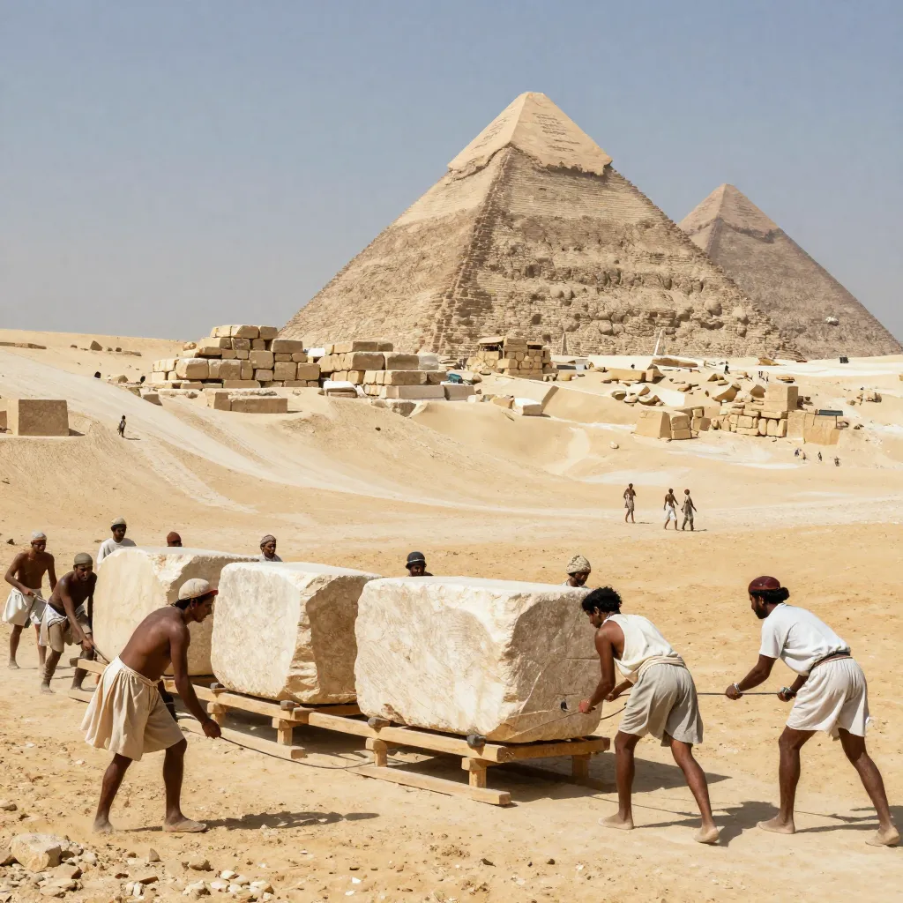
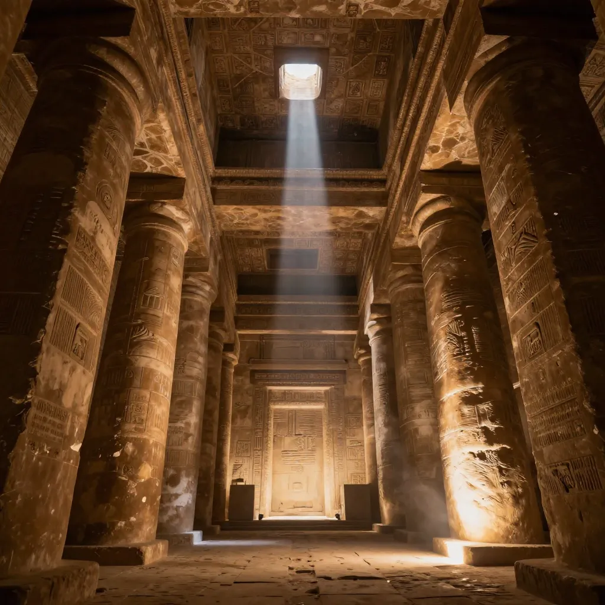

How Were the Pyramids Built? The Great Pyramid Mystery That Endures

The Great Pyramid of Giza has stood for over 4,500 years, still holding secrets locked in stone.
Standing at the edge of the Giza Plateau, gazing up at 2.3 million limestone blocks stacked with surgical precision, one question has haunted humanity for over 4,000 years: how did they do it? The Great Pyramid of Khufu rises 481 feet into the Egyptian sky — taller than a 40-story skyscraper — and yet it was constructed by a civilization that hadn't invented the wheel, the pulley, or iron tools. Every year, millions of visitors crane their necks upward and feel the same vertiginous wonder that has puzzled engineers, archaeologists, and dreamers across the centuries.
The Great Pyramid is not merely a tomb. It is a feat of engineering so extraordinary that some of its secrets remain locked in stone to this day. Despite satellite imaging, muon tomography, and robotic exploration, the full story of its construction continues to slip through our fingers like desert sand.
A Monument Beyond Imagination
The three pyramids of Giza — built for pharaohs Khufu, Khafre, and Menkaure — dominate the skyline west of Cairo. But the Great Pyramid of Khufu (also known by his Greek name, Cheops) stands apart as the last surviving wonder of the ancient world. Constructed around 2560 BCE, its statistics are staggering even by modern standards:
- 🏗️ It contains approximately 2.3 million stone blocks, each weighing an average of 2.5 tons
- 📏 The base covers 13 acres — nearly 10 football fields
- 🧭 Its sides are aligned to the four cardinal points with an accuracy of less than one-fifteenth of a degree
- ⚖️ The total weight is estimated at nearly 6 million tons
- 📐 The mortar joints between stones are thinner than a sheet of paper and have withstood 4,500 years of earthquakes
Consider that for a moment: the base of the Great Pyramid is level to within just 2.1 centimeters across its entire 230-meter length. Modern surveying equipment would struggle to achieve that precision on a building site today. How did the ancient Egyptians accomplish this without lasers or transits? The prevailing theory involves a shallow water trench around the perimeter — a simple but ingenious method of establishing a perfect horizontal reference line, a technique not unlike the ancient Greeks' later engineering ingenuity.
The Quarrying Puzzle
Most of the pyramid's core stones are local limestone quarried directly from the Giza plateau. But the outer casing — originally gleaming white Tura limestone, polished smooth enough to blind travelers in the sun — was brought from quarries across the Nile. Even more remarkably, the granite blocks in the King's Chamber, some weighing up to 80 tons, were transported from Aswan, over 500 miles to the south.
Copper chisels were the hardest tools available. Experiments have shown that quarrying a single limestone block with copper tools could take several hours. Multiply that by 2.3 million blocks, and you begin to grasp the staggering scale of organized labor involved — far from the whip-driven slave armies of popular imagination.

Experiments show wetting sand reduced the pulling force needed to drag stone blocks by 50%.
How Were the Stones Moved and Raised?
This is the question that has spawned a thousand theories, from the plausible to the absurd. The truth is, no written record survives explaining the construction methods. The Egyptians were prolific documentarians of religious rituals, harvest counts, and tax collections — yet they left no instruction manual for their greatest achievement. This absence of evidence has been filled by centuries of speculation.
The Ramp Theories
The most widely accepted explanation involves ramps — earthen or wooden slopes that allowed workers to drag stones upward on sledges. But which kind of ramp? A straight ramp long enough to reach the top would need to extend over a mile and would contain more material than the pyramid itself. A spiral ramp wrapping around the exterior is more efficient but would make it impossible to verify the pyramid's alignment during construction.
In 2007, French architect Jean-Pierre Houdin proposed an internal ramp system — a spiraling corridor built inside the pyramid's structure that allowed stones to be hauled upward without being visible from outside. Microgravity scans conducted in the 1980s by a French team did detect anomalous spiral-shaped density patterns inside the pyramid, lending tentative support to this idea.
Water, Boats, and the Vanished Nile Branch
Transporting blocks by water was far more efficient than dragging them across the desert. We know the Egyptians used boats — the Khufu ship, a full-sized vessel discovered sealed in a pit at the base of the Great Pyramid in 1954, is 143 feet long and remarkably seaworthy. But how did they get stones from boats to the construction site when the Nile is miles away from Giza today?
In a landmark 2022 study, researchers from the University of Southampton used sediment cores and geological analysis to prove that a now-vanished branch of the Nile — called the Khufu branch — once flowed directly alongside the Giza plateau. This waterway would have allowed massive stone-laden barges to dock within yards of the construction site, solving one of the most persistent logistical mysteries.
Hidden Chambers and Modern Revelations
Just when it seemed the pyramids had surrendered all their major secrets, technology began revealing hidden spaces that had been sealed since the Stone Age.
The 2017 Great Void
In November 2017, an international team of scientists using muon tomography — a technique that tracks subatomic particles produced by cosmic rays as they pass through stone — announced the discovery of a massive previously unknown void above the Grand Gallery. The space is at least 30 meters long and comparable in cross-section to the Grand Gallery itself. Its purpose remains completely unknown.
Is it a structural relief chamber? A hidden room? A construction tunnel that was never filled? The team, part of the ScanPyramids project, emphasized that no one has accessed this space in over 4,500 years. The discovery proved that the Great Pyramid still holds secrets that may fundamentally reshape our understanding of its design.

The Grand Gallery inside the Great Pyramid rises 28 feet with corbelled walls narrowing toward the top.
The Workforce: Not Slaves, But Skilled Laborers
Hollywood has long depicted the pyramids as the product of slave labor, but archaeological evidence paints a very different picture. Excavations of the workers' village at Giza by Dr. Mark Lehner and Dr. Zahi Hawass revealed bakeries, breweries, butcheries, and medical facilities. Workers ate prime cuts of beef and received medical treatment for injuries — hardly the treatment of disposable slaves.
The workforce appears to have been divided into competing teams. Graffiti found on blocks reads like ancient trash talk: "The Drunkards of Menkaure", "The Friends of Khufu", "How Powerful is the White Crown". These were proud, organized crews of skilled workers, many of whom rotated in from farming communities during the Nile flood season.
Open Questions That Won't Go Away
Despite two centuries of serious Egyptology, fundamental questions remain unanswered. Why is the Great Pyramid's alignment so astronomically precise? Its sides are oriented to true north with an accuracy that some engineers have argued would be difficult to achieve even with modern technology. Was this simply careful observation of the stars, or does it reflect a deeper astronomical knowledge we haven't fully appreciated?
And then there's the question of why. The pyramid complex included temples, causeways, smaller satellite pyramids, and boat pits — an entire ritual landscape designed to ensure the pharaoh's journey to the afterlife. But the sheer scale of the undertaking suggests motivations beyond mere religious devotion. The Great Pyramid may have served as a national unification project, drawing workers from every corner of Egypt into a shared, multi-generational enterprise that bound the kingdom together.
Frequently Asked Questions
How long did it take to build the Great Pyramid?
Most Egyptologists estimate the Great Pyramid took approximately 20 years to complete, based on the length of Khufu's reign (around 23 years) and the logistical calculations of how many blocks would need to be placed per day. This works out to roughly one block every 5 minutes during working hours — a pace that demands extraordinary organization and planning.
Did slaves build the pyramids?
No. Archaeological evidence from the workers' village at Giza shows that the builders were skilled laborers who were well-fed, received medical care, and were organized into named work crews. Many were farmers who worked on the pyramid during the Nile flood season when their fields were underwater. The slave labor myth was popularized by Hollywood, not by historical evidence.
How were the stones lifted to the top?
The exact method remains debated, but the leading theories involve ramp systems — either straight external ramps, spiral ramps around the exterior, or internal ramps built within the pyramid's structure. Recent research supports a combination of external ramps for the lower sections and an internal ramp system for the upper portions, as proposed by architect Jean-Pierre Houdin.
What was the 2017 void discovery?
Using muon tomography, scientists detected a large hidden space above the Grand Gallery inside the Great Pyramid. The void is at least 30 meters long and has not been accessed in over 4,500 years. Its purpose — whether structural, functional, or symbolic — remains unknown, making it one of the most exciting discoveries in modern Egyptology.
Sources & References
- Britannica: Great Pyramid of Giza — Comprehensive architectural overview
- Nature (2017): Discovery of a big void in Khufu's Pyramid by observation of cosmic-ray muons
- PNAS (2022): Fluvial ports in ancient Egypt reveal the Khufu branch of the Nile
- Harvard University: Dr. Mark Lehner's Giza Plateau Mapping Project
- Smithsonian Magazine: Who Built the Pyramids? — Debunking the slave labor myth
- History.com: Egyptian Pyramids — Construction and historical context
- Wikipedia: Great Pyramid of Giza — Detailed overview with extensive citations
📖 Recommended Reading
Want to learn more? Check out The Complete Pyramids: Solving the Ancient Mysteries by Mark Lehner on Amazon for a deeper dive into this fascinating topic. (As an Amazon Associate, we earn from qualifying purchases.)